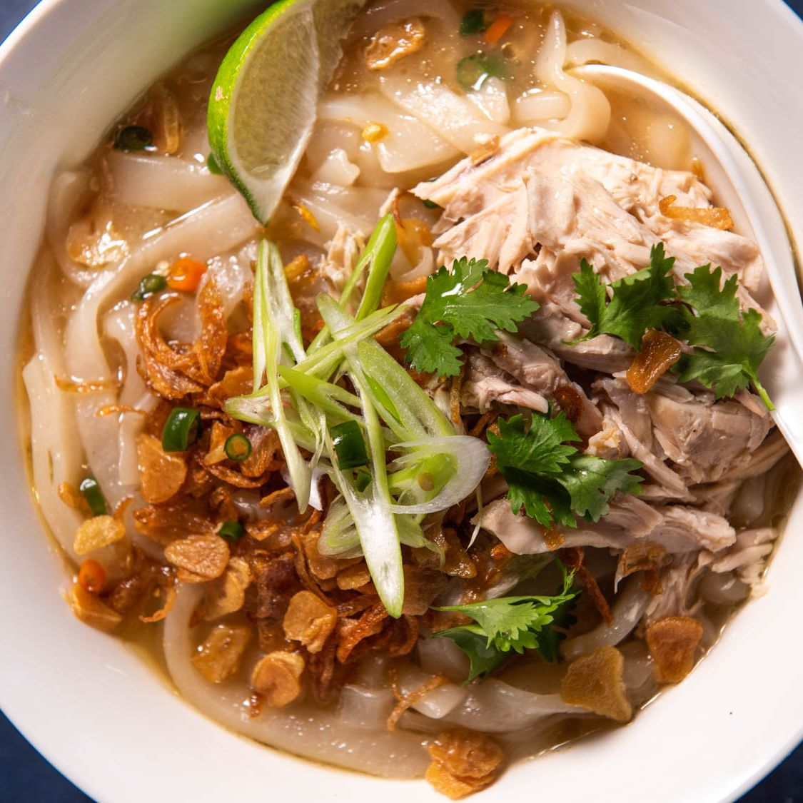

Home
Crab Omelette
Hainanese Chicken Rice
Khao Piak

This Lao noodle soup is loaded with layers of flavor. Multiple aromatics go into the rich chicken broth, including onion, ginger, lemongrass, lime leaves, and cilantro. The handmade tapioca-and-rice flour noodles, meanwhile, are cooked directly in the broth, their excess starch helping to thicken it and give it its signature viscosity. To top it all off, an array of toppings, like fried garlic and shallots, cilantro, chiles, and scallions, allow diners to customize their bowls as desired.
Ingredients:
For the Friend Garlic and Shallot:
- 1 cup (240ml) vegetable oil
- 24 cloves garlic (120g), sliced thinly crosswise, preferably with a mandoline
- 3 medium shallots (150g), sliced
For the Broth and Chicken:
- 1 medium yellow onion (10 ounces; 280g), peeled and quartered through the root end
- 3 large knobs ginger (3 ounces; 90g), peeled and sliced crosswise into 1/4 inch thick rounds
- 3 tablespoons (45ml) garlic and shallot oil, from above
- 1 stalk lemongrass (2 3/4 ounces; 80g), outer layer discarded then roughly chopped
- 6 medium cloves garlic (1 ounce; 30g), peeled and thinly sliced crosswise
- 5 makrut lime leaves
- Stems from 1 bunch cilantro (2 ounces; 60g), chopped
- One 3- to 4-pound (1.3 to 1.8kg) whole chicken, blotted dry
- 2 tablespoons kosher salt (3/4 ounce; 25g), plus more as needed
- 2 tablespoons soy sauce (1 ounce; 30g)
- 2 tablespoons Asian fish sauce (1 ounce; 30g)
- 1 teaspoon sugar
For the Noodles:
- 7 ounces (200g) plus 3/4 ounce (20g) white rice flour, divided
- 7 ounces (200g) plus 3/4 ounces (20g) tapioca flour, divided
- 1 3/4 cups (415ml) boiling water
To Finish and Serve the Soup:
- 2 scallions, sliced thinly on the bias
- 2 fresh bird's eye chilis, stemmed and minced
- 5 sprigs morning glory, pulled through a morning glory shredder
- Lime wedges
- Fried garlic
- Fried shallots
- Picked cliantro leaves
Directions:
-
For the Fried Garlic and Shallot:
Line a plate with paper towels and set a fine-mesh strainer over a medium heatproof bowl. In a medium frying pan, heat oil over medium heat until shimmering. Add garlic and fry, swirling and stirring frequently, until golden brown all over, approximately 4 minutes. Pour garlic and oil into prepared strainer and allow to drain. Transfer garlic to the prepared paper towels, spreading it out in an even layer, and allow to drain further.
-
Return oil to pan, then set fine-mesh strainer over the same heatproof bowl. Line a second plate with clean paper towels.
-
Add shallots to pan and cook over high heat, stirring frequently, until shallots begin to bubble, about 1 minute. Continue cooking, stirring constantly as the shallots fry to ensure even cooking, until shallots turn pale golden brown, about 3 minutes longer. Working quickly, pour contents of saucepan into strainer set over bowl. (Shallots will continue cooking for a brief period after draining, so do not allow them to get too dark.) Reserve garlic-shallot oil.
-
For the Broth and Chicken: If desired, grill or sear (in a cast iron pan without oil) two of the onion quarters and two-thirds of the sliced ginger until well charred, about 2 minutes per cut side (this will add depth and complexity to the broth, but is optional).
-
Roughly chop all of the onion and ginger, whether charred or not.
-
In a large 8-quart Dutch oven or soup pot, heat garlic-shallot oil over medium heat until shimmering. Add chopped onion and ginger, lemongrass, sliced garlic, lime leaves, and cilantro stems. Season lightly with salt, then cook, stirring, until onions are softened, about 7 minutes.
-
Add chicken to pot and top with at least 5 quarts (5L) cold water, or enough to cover. Add the 2 tablespoons kosher salt along with the soy sauce, fish sauce, and sugar. Bring to a simmer, then lower heat to maintain a gentle simmer. Cook, covered, for 2 hours, lifting lid occasionally to skim the surface of broth of any foam or scum that accumulates.
-
Carefully remove chicken from the pot and transfer to a work surface (it may fall apart after this long cooking; simply fish out all the parts and bones). When cool enough to handle, pull meat from bones and shred with your hands or a fork. Discard bones and skin. Reserve chicken meat.
-
Meanwhile, bring broth to a rolling boil and cook, uncovered, for 30 minutes. Strain broth, discarding solids, then return to cleaned pot. Season with salt.
-
For the Noodles: While the broth simmers, make the noodles. In a stand mixer fitted with the dough hook, add 7 ounces rice flour and 7 ounces tapioca flour. Turn mixer to medium-low speed and drizzle in boiling water. Continue to mix, pausing occasionally to scrape down the sides with a flexible spatula, until a moist dough ball forms, about 3 minutes.
-
Whisk together remaining rice and tapioca flours, then sprinkle on a work surface. Turn dough ball out onto floured work surface. Knead dough by hand until all of the flour on the board has been fully incorporated into a supple dough, about 4 minutes.
-
Roll dough into a thick log and divide into 8 equal portions. Roll each portion into a small ball, then flatten with the palm of your hand.
-
Working one dough disc at a time, and keeping the remainder covered with a kitchen towel to prevent drying, roll using a rolling pin until roughly 1/8 inch thick and about 6 inches long.
-
Using a sharp knife, slice into noodles roughly 1/4 inch wide. Transfer to a rimmed baking sheet, dusting and tossing gently with rice flour to prevent sticking. Keep noodles covered with a damp towel so they don't dry out. Repeat with remaining dough.
-
To Finish and Serve the Soup: Add noodles to boiling finished broth and cook, stirring very minimally to prevent them from breaking (they're brittle until they cook through), until noodles float to the surface, 1-2 minutes.
-
Transfer noodles to soup bowls. Add shredded chicken to each bowl. Ladle broth into bowls. Serve hot, allowing diners to garnish their soup with scallions, chiles, morning glory (if using), lime, fried garlic, fried shallots, and cilantro leaves and tender stems.
Top
Crab Omelette
Hainanese Chicken Rice